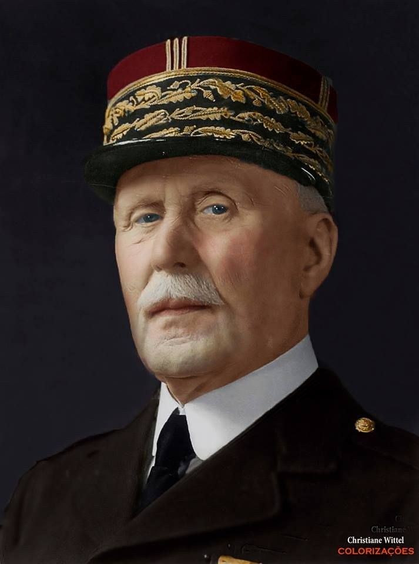

SumberPHILIPPE PÉTAIN adalah perwira militer Prancis yang menjadi Pemimpin Pemerintahan Vichy selama Perang Dunia II. Ia terkenal karena kolaborasi dengan Nazi Jerman dan peranannya dalam pemerintahan yang dianggap sebagai pengkhianatan oleh banyak pihak di Prancis.
Nama Lengkap: Philippe Pétain Lahir: 24 April 1856, Cauchy-à-la-Tour, Prancis Meninggal: 23 Juli 1951, Port-Joinville, Île d'Yeu, Prancis Jabatan: Pemimpin Pemerintahan Vichy (1940–1944) Marsekal Prancis Partai: Tidak terafiliasi secara langsung, tetapi dikenal sebagai bagian dari rezim fasis Vichy yang berkolaborasi dengan Nazi Jerman.
› Pétain memulai karier militernya di Angkatan Darat Prancis pada usia muda dan naik pangkat dengan cepat. › Ia dikenal karena keberhasilannya dalam Pertempuran Verdun (1916) selama Perang Dunia I, di mana ia dianggap sebagai pahlawan nasional Prancis karena mempertahankan kota Verdun dari serangan Jerman. › Sebagai Marsekal Prancis, Pétain mendapatkan reputasi sebagai pemimpin militer yang bijaksana dan tegas.
1. Penyerahan kepada Nazi (1940) › Setelah kekalahan Prancis oleh Jerman pada 1940, pemerintah Prancis di bawah Presiden Albert Lebrun mengundurkan diri. › Pada 17 Juni 1940, Pétain, yang saat itu menjadi Wakil Ketua Dewan Menteri, mengambil alih kepemimpinan dan memutuskan untuk menandatangani gencatan senjata dengan Nazi Jerman. › Pemerintahannya membentuk Pemerintahan Vichy di kota Vichy, yang mengontrol bagian selatan Prancis, sementara bagian utara dikuasai oleh Jerman. 2. Kolaborasi dengan Nazi Jerman › Sebagai pemimpin Pemerintahan Vichy, Pétain berkolaborasi dengan Nazi Jerman, yang mengarahkan kebijakan negara ke arah fasisme dan antisemitisme. › Di bawah Pétain, pemerintah Vichy mengadopsi kebijakan anti-Yahudi, termasuk persekusi terhadap warga Yahudi dan mendukung pengiriman mereka ke kamp konsentrasi. › Pétain juga mendukung pengiriman tentara Prancis untuk berperang di sisi Jerman dan membantu menekan perlawanan terhadap penjajahan Jerman. 3. Pembentukan Negara Fasis Vichy › Pétain memerintah dengan otoriter, membatasi kebebasan politik, dan menggantikan demokrasi Prancis dengan rezim otoriter yang mirip dengan fasisme. › Pemerintahan Vichy membuat kebijakan yang lebih konservatif dan berusaha mempertahankan "nilai-nilai tradisional" yang mendukung keluarga, agama, dan negara. KEPUTUSAN DAN KEJATUHAN PEMERINTAHAN VICHY 1. D-Day dan Perlawanan Terhadap Nazi › 6 Juni 1944: Pada saat Serangan D-Day, pasukan Sekutu mendarat di Normandia, yang menandai awal dari jatuhnya pemerintahan Vichy. › Pétain dan pemerintahan Vichy tidak dapat bertahan melawan perlawanan besar dari gerilyawan Prancis, pasukan Sekutu, dan kekalahan yang semakin mendalam. 2. Penangkapan dan Pengadilan › Setelah perang berakhir, Pétain ditangkap oleh pihak Sekutu pada 1944. › Ia diadili atas pengkhianatan oleh pengadilan Prancis karena kolaborasinya dengan Nazi selama pendudukan. › Pada 1945, Pétain dijatuhi hukuman mati, tetapi karena usia tuanya (ia berusia hampir 90 tahun), hukumannya dikurangi menjadi penjara seumur hidup. › Ia menjalani hukuman di Île d'Yeu, sebuah pulau kecil di pantai barat Prancis, hingga meninggal pada 1951.
✅ Dampak Positif: › Sebagai Marsekal Prancis, Pétain dihormati atas keberaniannya di Perang Dunia I, terutama dalam Pertempuran Verdun. ❌ Dampak Negatif: › Sebagai pemimpin Pemerintahan Vichy, ia dikenal karena kolaborasi dengan Nazi, yang menyebabkan penderitaan besar bagi warga Prancis, terutama komunitas Yahudi. › Pemerintahannya bertanggung jawab atas banyak kebijakan represif yang membatasi kebebasan dan mendukung kebijakan fasis. › Penerimaan publiknya sangat kontroversial, dan ia dihukum karena pengkhianatan setelah perang. Philippe Pétain dikenang lebih sebagai pemimpin yang kontroversial yang mengkhianati negaranya selama Perang Dunia II, meskipun ia sebelumnya dipuja sebagai pahlawan perang.